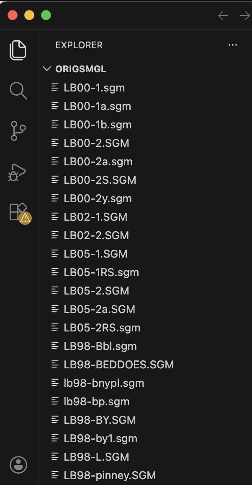

The digital Lyrical Ballads, co-edited by Bruce Graver and Ron
Tetreault, was first published by Romantic Circles in 2000. It was hosted separately, not on the main server
space for Romantic Circles maintained by the Maryland Institute of Technology
(MITH), and, for unknown reasons, the digital Lyrical Ballads (2000) disappeared even
before the transition of Romantic Circles from the University of Maryland to the
University of Colorado in 2018. One can see the original Romantic Circles publication
via the Wayback Machine , now maintained by the Library of Congress. Actual
access, however, takes persistence and patience.
, now maintained by the Library of Congress. Actual
access, however, takes persistence and patience.
It uncannily apt that the Lyrical Ballads, produced at a critical transition in the history of print — between coterie and mass printing, between dynastic and corporate publishing houses — should also have first appeared as a digital edition very early in the history of web publishing, only to suffer from massive medial transformations: an unprecedented evolutionary acceleration that could render a digital architecture "new" and then unusable within five or ten years (Schweikert; Weaver).
During the summer of 2024, the Director of Romantic Circles, Thora Brylowe, emailed Bruce Graver and me about republishing Lyrical Ballads. While Bruce had the files that he had originally created when transcribing copies from various libraries, the original server had disappeared without prior notice, and so he had saved none of the code for his digital edition. You can see all that remained of the original digital publication by Romantic Circles (Figure 1). Could we revive the digital edition?

Reader, it was possible.
Here we present the second Romantic Circles edition of Lyrical Ballads,
revived and expanded: the second release presents all 25 copies of Lyrical
Ballads that Bruce Graver transcribed, illustrating various states of
the first four editions (1798-1805), including an unauthorized edition printed
in Philadelphia. This kind of resurrection and augmentation were made possible
for one reason: Bruce had recorded information about the copies he saw using the
recommendations of the Text Encoding Initiative Consortium. . He could of course have
added editorial information in other formats, but TEI made that information
systemmatic and thus easily transformable via programming. Organized in 1986,
the TEI's mandate was to provide guidance for creators of digital resources so
that their scholarship could be expressed in code that would not obsolesce. Its
promise has proven true.
. He could of course have
added editorial information in other formats, but TEI made that information
systemmatic and thus easily transformable via programming. Organized in 1986,
the TEI's mandate was to provide guidance for creators of digital resources so
that their scholarship could be expressed in code that would not obsolesce. Its
promise has proven true.
Most certainly, simple typed text, whether inside code or not, would survive
multiple phases of web development, although ripping the text from an antiquated
CD-ROM, the original format proposed by Cambridge University Press, might have
been costly. And a plain HTML version would certainly have survived
technological innovation: the Penn Frankenstein provides an excellent example. But text and web formats do not easily afford
recording elements of interest for scholarly editors and researchers: the
editors would have had to devise a system or write prose comments about various
features, and then explain their methods to a programmer who would have to
implement an idiosyncratic method for displaying them that might not be legible
to programmers of the future. While the base code Bruce used, SGML, is no longer
recommended for use by the TEI guidelines for creating digital editions, the TEI
tags preserving his meticulous editorial work remained fundamentally stable. TEI
tags in SGML made possible recording whether the insertion of a correction
appears below the line or in the margin, whether it was written in Dorothy or William Wordsworth's hand. And it
is a short skip and a jump from SGML to the XML now used for TEI tagging.*
provides an excellent example. But text and web formats do not easily afford
recording elements of interest for scholarly editors and researchers: the
editors would have had to devise a system or write prose comments about various
features, and then explain their methods to a programmer who would have to
implement an idiosyncratic method for displaying them that might not be legible
to programmers of the future. While the base code Bruce used, SGML, is no longer
recommended for use by the TEI guidelines for creating digital editions, the TEI
tags preserving his meticulous editorial work remained fundamentally stable. TEI
tags in SGML made possible recording whether the insertion of a correction
appears below the line or in the margin, whether it was written in Dorothy or William Wordsworth's hand. And it
is a short skip and a jump from SGML to the XML now used for TEI tagging.*
The field of Digital Editing has learned much about preservation
primarily through the school of hard knocks. The Endings Project at the
University of Victoria  discovered through research that even extremely
well-funded digital resources typically did not last longer than five years. An
original infusion of funding allowed for hiring a programmer who could design a
beautiful site, with all the bells and whistles; but funding runs out, and even
one PHP upgrade on the hosting server can break everything.
discovered through research that even extremely
well-funded digital resources typically did not last longer than five years. An
original infusion of funding allowed for hiring a programmer who could design a
beautiful site, with all the bells and whistles; but funding runs out, and even
one PHP upgrade on the hosting server can break everything.
When the University of Colorado first started hosting Romantic Circles, the Drupal version from Maryland was almost unusable: as project manager Jessica Tebo puts it, "it was hanging by a thread."† It took four years to move everything into a new Drupal version simply because Drupal modules created by the open source community are not upgraded for every new version of Drupal, and often they are not upgraded at all. The commercial server host currently used by Romantic Circles is planning a PHP upgrade for October 2026 that will break the current Drupal instance hosting Romantic Circles, even before all the resources from the previous version have been ingested into this new version. It is for this reason that we are recreating Romantic Circles resources according to Endings-Project principles. Truly, the history of Romantic Circles makes it a poster child for why these best practices are necessary. The first Romantic Circles digital resource to fall victim to the relentless drive for technological innovation, Lyrical Ballads, is also the first Romantic Circles edition to be published according to best practices for preservation.
This digital edition also adheres to Stanford University Library's concept called LOCKSS—Lots of Copies Keeps Stuff Safe. Especially as a researcher interested in eighteenth-century women writers, knowing that all the remaining copies from small print runs can be destroyed by a Blitz and that there were writers whose work we will never know, I see proliferating copies as key to survival. So we offer here with a Creative Commons Zero license, available to any and all, the TEI encoded documents (now upgraded to XML), as well as the transforms, javascript, and css used to present TEI in usable and sustainable HTML. The technical goal of this edition is to ensure that the enrichments that the editor spent years meticulously recording, now visible here, can persist in the future research world, safe and sound.
* I used a python script to close tags and change entities, and then I made manual edits, all documented here. Back
† Jessica Tebo is currently a Ph.D. student in English at the University of Colorado who started working for Romantic Circles without any knowledge of Drupal: her efforts on behalf of Romantic Circles are nothing short of heroic. Back
Schweikert, Annie. "An Optical Media Preservation Strategy for
New York University’s Fales Library & Special Collections." 2018.
https://archive.nyu.edu/handle/2451/43877. Accessed 5/4/2026.
Accessed 5/4/2026.
Weaver, Andrew; Blewer, Ashley. "The Forgotten Disc: Synthesis
and Recommendations for Viable VCD Preservation." code{4}Lib 57
(8/29/2023). https://journal.code4lib.org/articles/17406. Accessed 5/4/2026.
Accessed 5/4/2026.